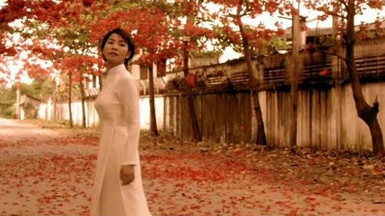

美好的电影，初看会有一种邂逅的暧昧，之后会余下暗香浮动的余味，时时萦绕于前。《恋恋三季》便是这样一部电影。 和大多数喜欢它的朋友一样，最初我也是被它的封面海报所吸引。一大片红得只属于梦境的花树，花儿就那样真真切切地盛放着，白衣飘飘的女子站在树下，仰望那一片迷人的红色，脚下同样是一地芬芳。朋友说那是凤凰花，也有人说那是木棉。从来没有见过凤凰花，对于木棉的印象也只有模糊的记忆，但似乎应该是粉红的。不管是哪一种，只希望有生之年能够见到才不会遗憾。 被这一树红花吸引的我们，看到的却是三则以莲花为核心的故事。于是知道了，那满树的红花只是背景，树下白衣少女所代表的莲花才是中心。三则故事，看似毫不相关，却都和莲花有着若隐若现的联系。
第一则故事里的采莲女和诗人，他们因莲花而相遇，更因采莲时哼唱的歌谣而相识。直到诗人死去，采莲女将新鲜的莲花撒在湄公河上，纪念他们短暂的感情。第二则故事里，“莲”是一个妓女的名字，三轮车夫执着地爱着她，直到靠三轮车比赛赢来的奖金和她共渡一宵，却没有碰她，还给她买了一条白色的连衣裙，于是就出现了封面的那一幕。第三则里美国老兵久寻遗失的女儿未果，却在最后发现女儿已沦落成妓女，他送她一束莲花，含泪的眼里是对女儿深深的愧疚。 毫无疑问，正是莲花串起了这三则波澜不惊平淡朴实的小故事。作为美籍越南裔导演Tony Bui的处女作，我们可以想象一位长期旅居国外的游子，一定希望以一种能够代表故乡的象征物来表现他眼中的故土。于是，莲花，在越南这个崇尚佛教的国家有着近似于国花地位的莲花，便自然而然地成为了这部导演回归之作的最大象征物。 导演以平民的视角，将越南的景与情，将越南的美豪无保留地展现给大家，而因为有了莲花的存在，这种美也因此变得圣洁起来。你甚至可以说这就是三则关于莲花的故事，莲可以是欣赏和爱慕，莲可以是经历风尘内心却依然纯洁的人，莲还可以是忏悔和宽恕。于是在走过旱季雨季之后，越南还有一个季节，那就是莲所赋予的希望的季节。